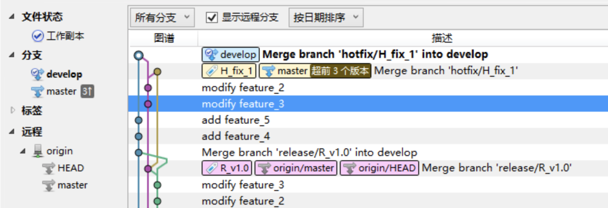
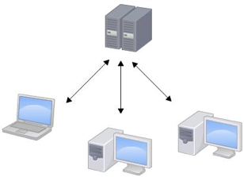
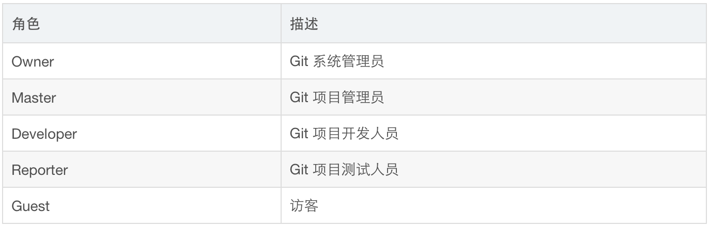
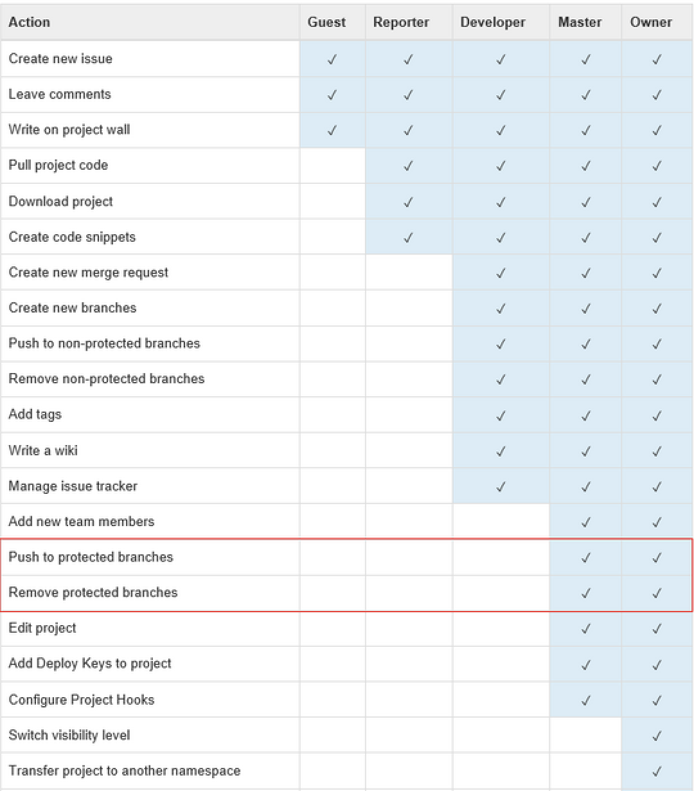

Git 常规操作
与基本存储原理
Jartto
2019.3.26
目标
1.了解 Git 命令行的基本操作
2.在工作中自如应对 Git 的各种场景
3.了解 Git 权限控制与提交规范
4.知道 Git 的基本存储原理
SourceTree 可视化

命令行

git log --online --graph
Git or SourceTree？
SourceTree 一览无余，不用思考，直接使用。我们很容易就忽略了 Git 操作的原理。
Git 命令行更像是一个魔法盒，我们寻着线索就可以找到宝藏。
不用纠结究竟使用 Git 还是 SourceTree，用你最擅长的方式去工作就好了。
Git 基本概念
1.Git 和 SVN 区别与联系
2.集中式与分布式
3.Git 本地目录组成
4.Git 的五种状态
SVN
1.版本库维护在服务端，必须联网才能操作
2.简单易用，对 Windows 系统和二进制文件支持很好
3.每个分支都是一个单独的副本，所以创建分支和下载代码库都非常耗时
Git
1.没有服务端，每个仓库都有完整的版本库，大多数操作不需要联网
2.有一定学习成本，对 Linux 和 Mac 支持很好，对二进制文件支持不太好
3.针对文件变化记录版本，分支只是一个指针，所以速度更快
4.Git 把内容按元数据方式存储，而 SVN 是按文件
集中式
在集中式系统中，每个开发者就像是连接在集线器上的节点，彼此的工作方式大体相像。

分布式
在 Git 中，每个开发者同时扮演着节点和集线器的角色。也就是说，每个开发者既可以将自己的代码贡献到其他的仓库中，同时也能维护自己的公开仓库，让其他人可以在其基础上工作并贡献代码。
Git 组成

1.工作目录，它持有实际文件；
2.暂存区（Index），它像个缓存区域，临时保存改动；
3.HEAD，它指向最后一次提交的结果。
五种状态
1.未修改(Origin)：原始文件
2.已修改(Modified)：本地修改
3.已暂存(Staged)：执行了 Add
4.已提交(Committed)：执行了 Commit
5.已推送(Pushed)：推送到远程

# 常规操作 - 初始化
* 初始化 git 仓库：`git init`
* 远程仓库
* 配置：`git remote add url`
* 查看：`git remote -v`
* 查看具体某一个：`git remote show origin`
* 分支
* 新建分支：`git branch feature`
* 查看所有分支列表：`git branch -a`
* 删除分支：`git branch -d feature`
* 通过参数：`git checkout -b 'feature'`
-----
# 常规操作 - 撤销1
* 查看状态：`git status -s`
* 已修改，未暂存
* 撤销：`git checkout .`
* 或者：`git reset --hard`
* 简单来说，`git add .` 的反向操作就是 `git checkout .`
* 已暂存，未提交
* `git reset`
* `git checkout .`
-----
# 常规操作 - 撤销2
* 已提交，未推送
* `git reset --hard origin/master`
* 已推送
* 先恢复本地库：`git reset --hard HEAD^`
* 再强制同步远程库：`git push -f`
* 不小心 pull 错了分支
* 先 `git reflog` 查看一下提交记录
* 再回退到之前的版本：`git reset --hard HEAD@{n}`
-----
# 常规操作 - 合并
* 尽量使用 merge 合并，避免使用 pull 来合并
* merge：合并分支
* 合并分支：`git merge test`
* 取消合并：`git merge --abort`
* 继续执行：`git merge --continue`
* pull：
* 相当于是从远程获取最新版本并 merge 到本地
* fetch：
* 相当于是从远程获取最新版本到本地，不会自动合并
-----
# 常规操作 - 代码对比
* 工作区与暂存区比较
* `git diff filepath`
* 工作区与 HEAD ( 当前工作分支) 比较
* `git diff HEAD filepath`
* 暂存区与HEAD比较
* `git diff --staged 或 --cached filepath`
* 当前分支的文件与 branchName 分支的文件进行比较
* `git diff branchName filepath`
* 与某一次提交进行比较
* git diff commitId filepath
-----
# 常规操作 - 标签
* 查看标签：`git tag`
* 打标签：`git tag V2.1 -m 'version 1.4'`
* 为某次提交补打标签：`git tag V2.1 f52c633`
* 查看标签：`git show V2.1`
* 删除标签：`git tag -d 'jartto'`
* 提交标签：`git push origin V2.1`
* 推送所有标签：`git push origin --tags`
记不住怎么办？
万能口令：git --help
具体某一个口令：git [tag] --help

四、十万个为什么？
1.为什么 gitignore 失效了？
答：git rm -r --cached .
2.切换分支后，为什么有的文件不见了？
答：git 分本地和远程，所以一定要记得切换分支后，同步远程代码
3.为什么 git 嵌套会报错，如何解决？
git submodule add [repository] [path] 添加子模块
git submodule init 初始化子模块
git submodule update 更新子模块
git submodule foreach git pull 拉取所有子模块
4.我正在写 bug，你跟我谈新需求？
git stash
开始其他工作…，之后回来：
git stash pop
查看 stash
git stash list
如果临时版本存的太多，可以取出具体某一次：
git stash apply 0
5.Hello, 我想要你分支上面的某一次提交记录
git cherry-pick c2523d27
如果有冲突，先解决，然后继续：
git cherry-pick --continue
取消分支合并：
git cherry-pick --abort
6.谁动了我的代码，我要把他揪出来！
程序员都有指责他人的天性
git blame
挖地三尺：
git blame package.json | grep 'build'
7.多个远程仓库如何配置呢？
git remote add origin [repository] A
git remote add temp [repository] B
五、Git 权限控制


六、Git 提交规范
提交规范有何意义？
1.可维护
2.提供更多的信息，方便排查与回退
3.过滤关键字，迅速定位
4.方便生成文档 Change log
## 简单规则1
* `[type]([scope]): [subject]`
* Type：commit 的类别，只允许使用下面7个标识。
* feat：新功能（feature）
* fix：修补bug
* docs：文档（documentation）
* style： 格式（不影响代码运行的变动）
* refactor：重构
* test：增加测试
* chore：构建过程或辅助工具的变动
-----
## 简单规则2
* Scope: 用于说明 commit 影响的范围，比如数据层、控制层、视图层等等，视项目不同而不同
* Subject：是 commit 目的的简短描述，不超过 50 个字符。
* 以动词开头，使用第一人称现在时，比如 change，而不是 changed 或 changes
* 第一个字母小写
* 结尾不加句号（.）
-----
## 简单规则3
"config": {
"validate-commit-msg": {
"types": [
"feat",
"fix",
"docs",
"style",
"refactor",
"test",
"chore"
],
"scope": {
"required": false,
"allowed": [
"view",
"model",
"service",
"config"
],
"validate": true,
"multiple": true
}
},
"ghooks": {
"commit-msg": "validate-commit-msg"
}
},
七、.git 文件夹的秘密
Git 相对于传统的版本控制系统，更加强大和灵活。
众多的命令和参数也很容易让人望而却步，如果不了解 Git 的内部原理，想用顺手就难上加难了。
所以，我们需要从他的存储原理出发，
深入的了解，这样才能知其所以然。

Git 的本质是一个文件系统，其工作目录中的所有文件的历史版本以及提交记录( Commit )都是以文件对象的方式保存在 .git 目录中的。

该目录将用于保存工作区中所有的文件历史的历史版本，提交记录，branch，tag等信息。
.
├── HEAD 工作目录当前状态对应的commit，一般来说是当前branch的head
├── config git配置信息，包括用户名，email，remote repository的地址，本地branch和remote
├── description 该git库的描述信息
├── hooks 钩子程序，可以被用于在执行git命令时自动执行一些特定操作
│ ├── applypatch-msg.sample
│ ├── commit-msg.sample
│ ├── fsmonitor-watchman.sample
│ ├── post-update.sample
│ ├── pre-applypatch.sample
│ ├── pre-commit.sample
│ ├── pre-push.sample
│ ├── pre-rebase.sample
│ ├── pre-receive.sample
│ ├── prepare-commit-msg.sample
│ └── update.sample
├── index
├── info
│ └── exclude
├── logs
│ ├── HEAD
│ └── refs
├── objects 保存git对象的目录，包括三类对象commit,tag, tree和blob
│ ├── 05
│ ├── ...
│ ├── f8
│ ├── info
│ └── pack
├── packed-refs
└── refs 保存branch和tag对应的commit
├── heads branch对应的commit
├── remotes
└── tags tag对应的commit
├── objects
│ ├── 05
│ │ └── 1024e645d871316c7c121a0b679d4e28d31154
│ ├── 0a
│ │ └── ae6b80dc44dbaa0af78d5eda1d8128f2b34451
│ ├── f8
│ │ └── c7e50c201765c456ddbf21e9ea5b3e6a936920
│ ├── info
│ └── pack
│ ├── pack-917f72660952983275f4395c752a563a402a35a4.idx
│ └── pack-917f72660952983275f4395c752a563a402a35a4.pack
### 查看 Git Object 存储内容
* 通过 git cat-file 命令可以查看 Git Object 中存储的内容及对象类型，命令参数为 Git Object 的 SHA-1 哈希值，即目录名+文件名。
-----
### 我们来看一下 HEAD 存了什么
* 执行 cat HEAD
* 屏幕会输出：ref: refs/heads/master
* 我们得到了目前 HEAD 对应的分支
* 继续输入：cat .git/refs/heads/master
* 通过分支查到了 commit 对象，输出：
* 60519d7143abe471a29073f2cd3f232e24f754ae
-----
## 杀手锏 cat-file

* -t 查看文件类型：git cat-file -t 60519d
* -p 查看文件内容：git cat-file -p 60519d
* commit 对象中保存了commit 的作者、描述信息、签名信息以及该 commit 中包含 tree 对象和 blob 对象。
-----
## 查看 tree 对象
* git cat-file -p 7b8458a

-----
## 查看 blob 对象
* git cat-file -p 488ffe89f

-----
## 总结
根据上述实验，其实存在三个类型：
* Blob：文件对象，对应一个对象
* Tree：目录对象，存储目录结构和文件
* Commit：Commit 对象中保存了 Commit 的作者，描述信息，签名信息以及该 Commit 中包含哪些 Tree 对象和 Blob 对象。
一个 Branch 其实只是一个 Commit 对象的应用， Git 并不会为每个 Branch 存储一份拷贝，因此在 Git 中创建 Branch 几乎没有任何代价。
Q&A